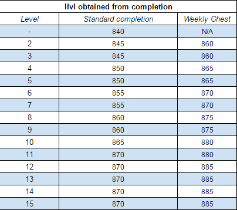

what m+ trash do i have to deal with this week?
us: teeming, skittish, fortified
eu: bolstering, overflowing, tyrannical
Next week:
US: raging, necrotic, fortified
eu: sanguine, volcanic, fortified
Affix effects
Level 4 affixes (these occur at +4 keystones)- Bolstering - Non-boss enemies will buff nearby allies' health and damage when defeated.
- Raging - Non-boss enemies will enrage at low health, dealing double damage until killed.
- Sanguine – Shortly after death, non-boss enemies will leave a pool of blood on the ground, which grows to a 5yd radius over 2 seconds. This pool heals enemies and damages players for a % of their maximum health.
- Teeming - Additional non-boss enemies are present throughout the dungeon; kill count requirement increased.
- Overflowing - Overhealing causes the target to gain a healing absorption shield for the amount overhealed.
- Necrotic - Enemy melee attacks apply a stacking debuff that deals damage and reduces healing received.
- Skittish - Tanks generate much less threat.
- Volcanic - Enemies cause eruptions of flame beneath the feet of distant players.
- Fortified - Non-bosses have more health and deal more damage.
- Tyranical - Bosses have more health and deal more damage.

Base damage and health increases per keystone level
Useful stuff
-
Addons
- GottaGoFast - All-in-one mythic+ timer.
- Angry Keystones - Another take on the keystone/mythic+ timer
- MythicPlusProgress - Provides mob percent value toward the "Enemy Forces Eliminated" counter in tooltips and on nameplates.
- GTFO - Alerts you if you're standing in something you shouldn't. (does not work for volcanic before it explodes)
- LittleWigs - Dungeon bossmod addition if you're using BigWigsBossmods (DBM has this built-in)
-
Weakauras
- A list of dungeon weakuras (with interrupt/cc tracker)
- RaidCDs WeakAura - A WeakAura to track raid/group utility CDs (i.e Barkskin, Blessing of Sacrifice, etc)
-
Other stuff
- Mythic+ Friends Discord - Find a group of people to run M+ with if group finder isn't good enough for you.
- Consolidated M+ info spreadsheet - for all the nitty gritty
- Warcraft logs - top keystone rankings for laffs